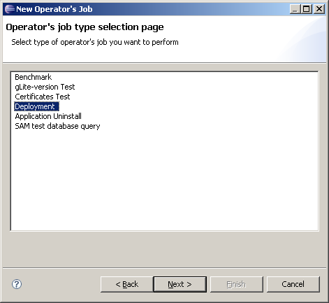
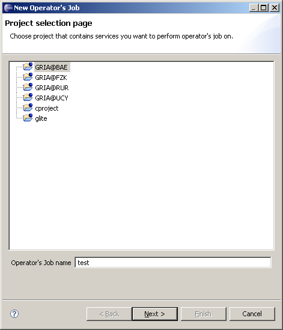
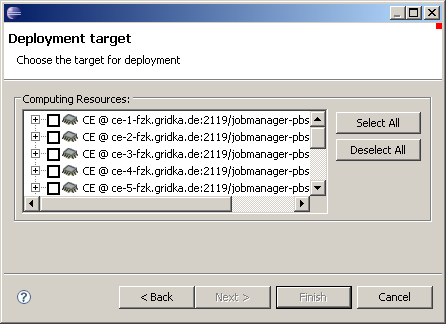
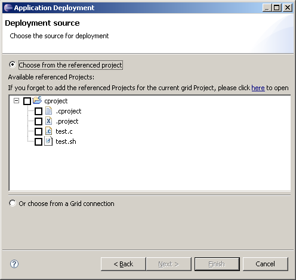
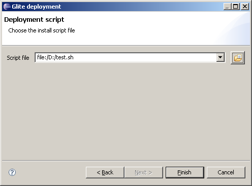

Application deployment deals with cases of software installation on computing elements. The software can be binary or source codes in a tar or other archive form, or just a few programs in a certain programming language. The task of a deployment is to make the software ready on the CEs (i.e. all work nodes of a CE) for use of later. This means, the software is installed on a specific directory which is stored in an environment variable. In some cases, the software can be invoked using web services. To deploy, a user usually has to give instructions how to install or build the software on the CEs.
After installation, the deployed application will be published: there is an Application folder combined with the VO where all applications for the VO are presented; an application is also shown on the CE in the Computing folder.
Only users who have got a role of deployer in his VO can deploy applications. To get this role, please contact your VO manager. For using the deployment functionality, this role must be specified during the creation of an authentication token.
The deployment functionality is implemented using the g-Eclipse service job infrastructure. This means, every deployment job is regarded as an operator's job. This job can be created, run, and traced. An uncompleted deployment job will be continued after g-Eclipse is restarted again.
First the Deployment Wizard has to be invoked. As the deployment feature is combined with the service job framework, this wizard can only be started via the New Operator's Job Wizard. There are two positions to start the operator's job wizard: either in the Operator's Jobs view or at a Computing Element in the Computing folder of a VO. In the first case, there is a button for creating a new operator's job and in the later case a context menu "Run Operator's Job..." can be used.
The first page for deployment is the project selection page. Deployers need to specify a grid project as a deployment location. This project must hold the VO where the software installation will be performed. It is also a location to store related information collected during the deployment process.
For deployment, users have to provide the target, the source and the tag. The next wizard page allows the deployer to specify the installation target. Users can select one or many CE(s). The application will be deployed on all work nodes of all selected CEs.
The following wizard page allows the user to give the install source: a software packet. The packet can be some on-line created files contained in any project in the runtime workspace like the "cproject" in the example; or some software packages or files already stored in the local disk or any storage element. In the first case, the project must be linked to a grid project. In the second case, a file dialog will be provided for deployers to select files from an existing Grid connection.
The last wizard page allows the user to specify a tag for identifying the installed software. This tag will be used later to look for the application or to uninstall it. The tag can be just a name or a combination of the name, the version, and the created date, time, etc.
After the last wizard page, additional pages may be shown depending on the underlying middleware. Please refer to the concept part in the middleware category for more details.
After all information is provided, a service job is created. This job can be seen in the Operator's jobs view. The job can be run via the context menu "Run Operator's Job". The status of the job can be observed in the Operator's job history view. In case of a successful deploy job, the status will be OK and the tag of the application (the installed software) will appear in both the folder Applications and the CE of a VO.